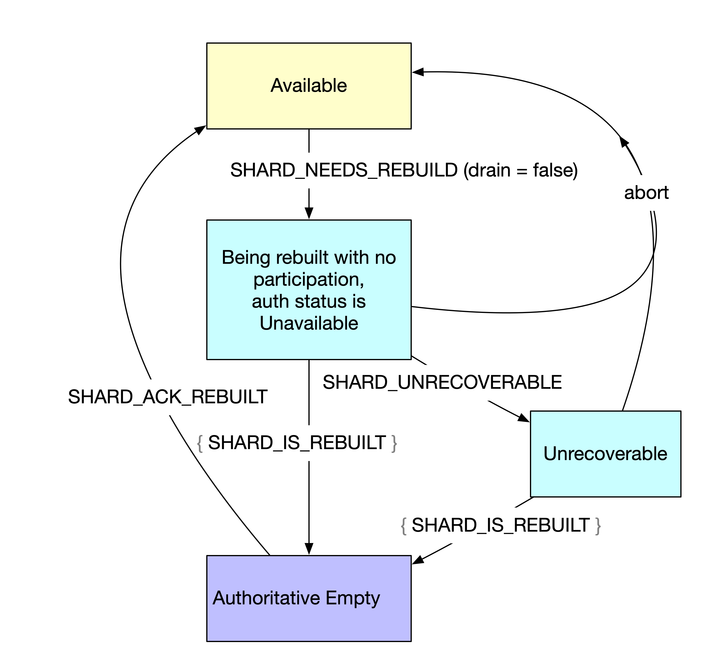
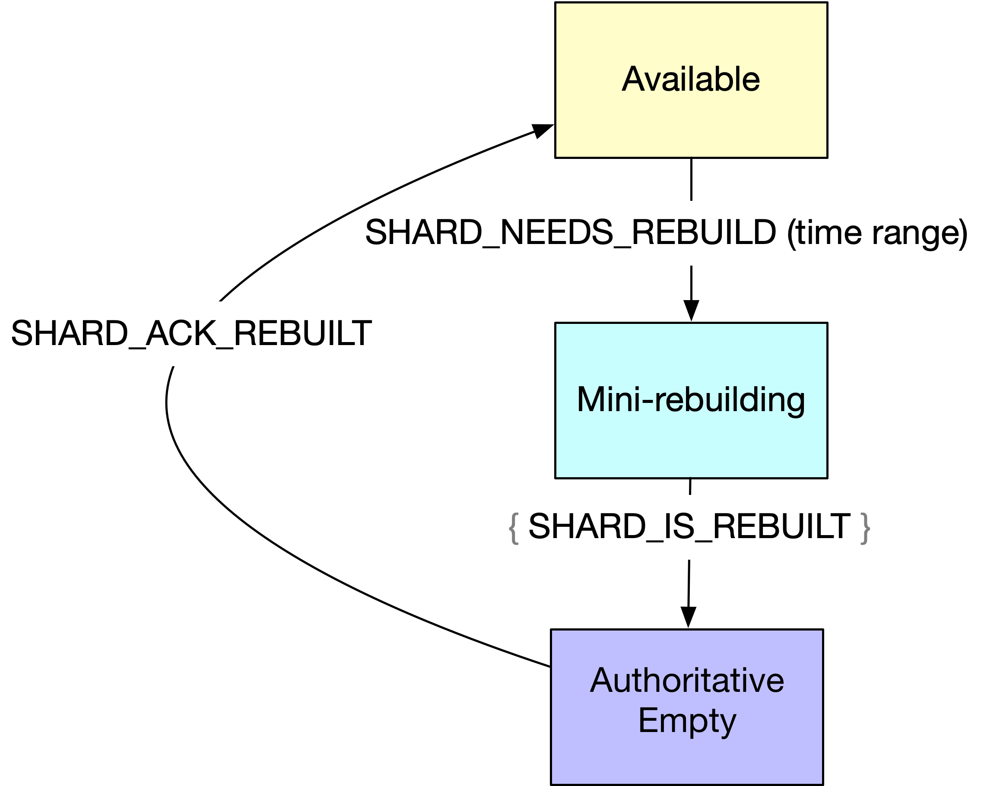

Rebuilding
The rebuilding process re-replicates records if a storage node or drive becomes unavailable, so as to maintain the replication factor. It also updates the copyset of the copies of the replicated records to point to the new location.
Rebuilding operates in a distributed, many-to-many fashion so as to minimize the rebuilding time. All available storage nodes in the affected logs' nodeset participate in rebuilding. They all send and they all receive records.
Rebuilding is implemented in terms of re-replicating the data from a shard. If a whole node goes down, all of its shards are rebuilt.
Event log
Rebuilds are coordinated through the event log, which is a replicated state machine (RSM) that runs on every storage node. The event log tails an internal log to build a state that is eventually consistent across all hosts in the cluster.
The event log maintains the authoritative status and the rebuilding state of all shards in the cluster. The rebuilding state includes whether a shard needs to be rebuilt, has been rebuilt, or is participating as a donor of records.
Triggering rebuilding
A rebuild is initiated when one of the following happens:
- The global failure detector determines that a node in the cluster is non-responsive. The RebuildingSupervisor that runs on each storage node starts a timer for the non-responsive node, and if it's down for longer than
self-initiated-rebuilding-grace-period(default 20 minutes), then rebuilding is initiated for all shards on the failed node. In this case, the rebuild is initiated by the storage node with the smallest id among those that are alive in the cluster. - A storage node initiates rebuilding if it detects that one of its drives has failed or is having I/O errors.
- A storage node requests rebuilding if it restarts and sees that the database is ok but empty, unless one of the following conditions is met:
- It is a new node.
- There is a RebuildingCompleteMetaData marker in each shard's local log store.
- On restart after an unclean shutdown, a storage node sees that its data is mostly intact but it's missing a limited number of partitions. (This would only happen if the write-ahead log is disabled). The node initiates a rebuilding with a start and end time. This time-limited rebuilding is called a mini-rebuilding.
- An administrator wants to remove all the data from a node.
The rebuild initiator sends a SHARD_NEEDS_REBUILD message to the event log for each shard that needs rebuilding.
Creating a plan
When a node sees the SHARD_NEEDS_REBUILD message, it creates the RebuildingPlanner state machine. RebuildingPlanner creates a rebuilding plan by doing the following:
- It gets the logs in the config file that correspond to the shards that need to be rebuilt.
- For each log, it contacts the sequencer to get the current LSN. Unless this is a mini-rebuilding, we need to rebuild up until that point (the until_LSN). If a sequencer for a log doesn't exist, then it's activated. Rebuilding activates all the sequencers.
- For each log, RebuildingPlanner retrieves the epoch metadata with historical nodesets and replication factors. For each epoch, it checks whether the nodeset intersects with the shards that are supposed to be rebuilt. If so, the epoch is added to the plan.
- It finds the list of local shards that should be donors by comparing them to the nodeset. These shards will be used to replicate the data.
RebuildingPlanner waits for the current LSN to get released to ensure that rebuilding won't interfere with recovery.
When the planning is complete, reading and replicating data can begin.
Contributing records
The RebuildingCoordinator running on the node iterates over the copyset index, which is a table of (log id, LSN, copyset). For each record, RebuildingCoordinator determines if it should contribute by looking at the copyset index. The node that is the first live node in the copyset is called the copyset leader, and it's responsible for donating the record. (This is similar to Single Copy Delivery in the read path, where only one node delivers a copy of a record).
The RebuildingCoordinator running on the copyset leader does the following tasks:
- It creates a RecordRebuilding state machine.
- It picks a new node and sends a STORE message to it. The new node isn't in the copyset but is in compliance with the replication policy for the log.
- On a successful response from the recipient, the donor sends an AMEND message to the other nodes with a copy of the record so they can update their copyset.
- The donor amends its local copyset.
- After all nodes are updated for a record, the state machine is deleted.

When each donor thinks it is done donating records to a shard (because it has processed the copyset index to the until_LSN), it writes to the event log with a record type of SHARD_IS_REBUILT.
If it's a full rebuilding, once all the donors say they are done, the shard is marked AUTHORITATIVE_EMPTY. This means that the shard's data has been replicated elsewhere, the shard is no longer in the cluster, and it's not considered for f-majority.
Nodes can continue to serve read requests even as they donate to rebuilding.
Rebuilding with WAL
At Facebook, we don't usually write to the write ahead log (WAL) when doing normal writes. However, every rebuilding store and amend is written to RocksDB WAL and to RocksDB memtable. If the writes to memtable are lost before the memtable is flushed to disk (because of a crash), those writes could be recovered from the WAL on the next start-up. Rebuilding of a record is marked as complete only after the writes are durable on the recipient.
Failed node starts up
When a node comes up it reads the event log. If it has no data, it waits as each of its shards are rebuild and marked empty. While rebuilding is happening, it rejects reader requests with a special status of REBUILDING. For readers, it has an underreplicated authoritative status. When each shard is done, the node sends a SHARD_ACK_REBUILD message to the event log to indicate that it is ready for writes again. It also writes RebuildingCompleteMetaData to the shard that was rebuilt.
If a node comes back with its data intact, and it sees that rebuilding is ongoing by checking the event log, then it aborts rebuilding. The shard continues as a storage node. This means some records might be over-replicated, but that hasn't proven to be a problem in practice.
Shard Authoritative Status
Each shard has an Authoritative Status which is based on the information in the event log.
- Fully Authoritative (FA): This is the normal state for a shard: it has data and should be considered for f-majority.
- Underreplicated (UR): The shard is marked unrecoverable in the event log. The data on that node is not coming back.
- Authoritative Empty (AE): The shard was down and the records have been copied elsewhere.
- Unavailable (UA), which is equivalent to fully authoritative (except for in recovery, where the shard is treated as underreplicated). The node is down. Rebuilding is ongoing and we haven't given up on the data yet. Readers can't connect to the storage node, or at least, they can't access the data on the shard.
Rebuilding state
The event log state machine also maintains a rebuilding state for each shard in the cluster. There are 5 possible states:
- Being rebuilt without the participation of the node itself (the node is marked unrecoverable).
- Being rebuilt without the participation of the node itself (the node is not marked unrecoverable).
- Draining. The node is being rebuilt with the participation of the node.
- Rebuilt and authoritative empty. The node has not started taking writes yet. It hasn't acked yet, maybe because it is dead, or drained, or it doesn't have a writeable db.
- Available.
State diagrams
These state diagrams illustrate some of the rebuilding state transitions.
Shard is drained

Some administrative action (involving ldshell) initiates the draining of the shard. ldshell writes SHARD_NEEDS_REBUILD with drain set to true to the event log.
The shard enters the “being rebuilt with the participation of the node” state. Its authoritative status is still available, and it still serves read requests. The donor nodes write a SHARD_IS_REBUILT message for each record that they contribute. If an undrain command is received, the node returns to normal state immediately.
Once all records have been replicated elsewhere, the node is marked as Authoritative Empty. If an undrain command is received at this point, the node writes SHARD_ACK_REBUILT and returns to normal state.
Shard goes down and rebuilding happens

Other nodes detect that a node is unavailable, or a node requests a rebuild because it had I/O errors. One or more nodes writes SHARD_NEEDS_REBUILD with drain set to false to the event log.
The shard enters the “being rebuilt without the participation of the node” state. The event log marks authoritative status as unavailable.
Optionally, the SHARD_UNRECOVERABLE message may be written. An administrator may mark the node as unrecoverable or the node itself may do it if the shard is empty or has I/O errors. The affected node is marked as unrecoverable in the event log, and its authoritative status is underreplicated.
The donor nodes write a SHARD_IS_REBUILT message for each record that they contribute.
If the affected node comes up before the rebuilding it done, it issues an abort and returns to normal state.
Once all records have been replicated elsewhere, the node is marked as Authoritative Empty.
If/when the affected node comes back up, it writes SHARD_ACK_REBUILT and returns to normal state.
Mini-rebuilding

A node detects that it is missing partitions. It writes SHARD_NEEDS_REBUILD with a non-empty set of time ranges that represent the records that it is missing.
The donor nodes write a SHARD_IS_REBUILT message for each record that they contribute.
Once all records have been replicated elsewhere, the node writes SHARD_ACK_REBUILT and returns to normal state.
When doing a mini rebuild, the affected shard is fully authoritative. At read time, if the records couldn't be replicated, it reports a NO_RECORDS gaps to the client for the range of records that were supposed to be in the partition but are missing. The shard is marked as underreplicated only for that range of records.
Authoritative and non-authoritative rebuilds
An authoritative rebuilding is one that guarantees that all records will be left sufficiently replicated (according to the replication properties) when it completes.
The RebuildingPlanner looks at the set of shards that are being rebuilt and decides if it still has f-majority for the nodeset. If not, then the rebuild is not authoritative. Rebuilding still proceeds, but once it's complete, the rebuilt shard state does not transition to authoritative empty.
As discussed in Read Path, if the client sees that there is a gap, it stalls until an administrator restores the nodes or marks them as unrecoverable. We assume that the reader cares about data loss, which is why human intervention is required.
Rebuilding while the node is available
If the node that's being rebuilt is available, as is the case when nodes are being drained for maintenance, the node participates (with the other nodes) in serving its data. The rebuilding goes much faster than if the node is not available, allowing you to drain half a cluster at a time and not lose data.
The node is still available to readers while it is draining.
Detecting dirty partitions
When writing to a partition, LogsDB does the following:
- Marks the partition dirty by doing an fsync to the write-ahead log (WAL).
- Writes the record to RocksDB, where it is cached in a memtable.
- Marks the partition clean after the record has been flushed. On graceful shutdown, all partitions are marked clean.
When a node starts up, it checks if any of its partitions are dirty. If so, it knows that it has lost a limited set of records. It doesn't need a full rebuild, so it initiates a mini-rebuild for the time range of the missing records.
Optimizations
- There is a coordination mechanism called global window that ensures that donors are all reading in the same area of the log at the same time.
- Exactly 1x read amplification is achieved if sticky copysets have been used, even when several nodes rebuild simultaneously.
- Traffic shaping ensures that the system is not degraded by rebuilding work.
Checking the status of rebuilding
Use ldquery to check the status of a rebuild:
SELECT * FROM shard_authoritative_status ORDER BY node_id, shard